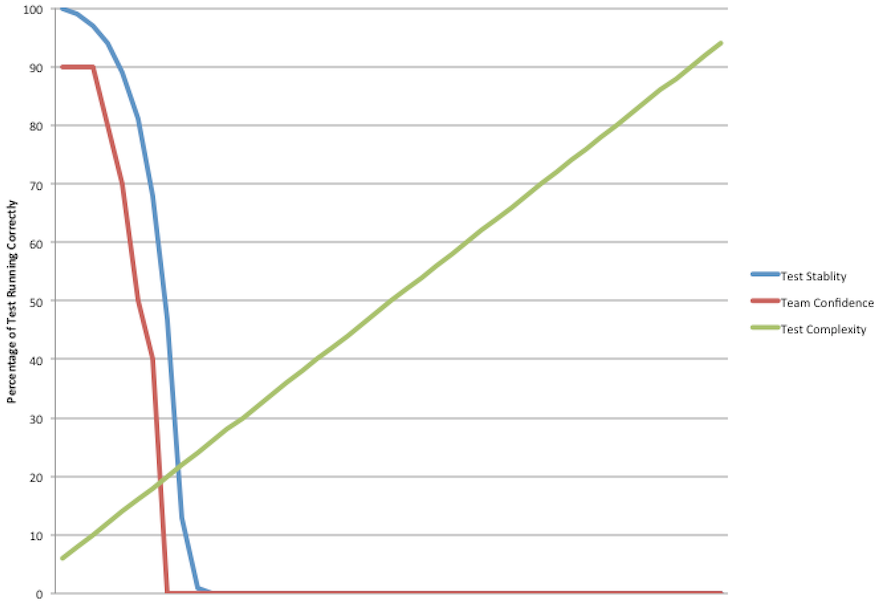

WireMock: Criação de um ambiente confiável e escalável para execução de testes de integração
Luiz Hermes Svoboda Junior
Gustavo Coelho
November, 2017
Contextualizar o projeto
Apresentar o produto global dashboard Apresentar o status atual do nosso ambiente de CI Apresentar o problema com o ambiente Falhas recorrentes de builds causadas por problemas de infra Criação do CM para “manutenção” da infraestrutura (não resolveu o problema) Incluir diagrama mostrando como é utilizado Utilização de pacote XYZ (talvez seja superserver) para mockar testes de REST dentro do próprio teste Incluir um exemplo mostrando como fica o código ADICIONAR O QUE MAIS ACHARMOS RELEVANTE
Automated Testing Stability and Team Confidence

Integration Testing
Desired characteristics:- Stability Test must be reliable!
- Speed I want to know as quickly as possible that I broke something!
- Environment-agnostic tests: tests should be independent and self-contained.
- Test data: tests failing because expected data was not available in the system.
- Depending on external components can be slow (ex. requests sent to OneView)
WireMock
Mock your APIs for fast, robust and comprehensive testing
WireMock
- Simulator for HTTP-based APIs
- Supports testing of edge cases and failure modes that the real API won't reliably produce
- We can even extend current API limitation: extend OneView scale limits
- Ability to inject faulty behavior (delay injection and faulty responses)
- Because it’s fast it can reduce build time
- Run within a Java application or as a standalone process (embedded Jetty)
- Request Matching and Response Templating
- Match request URLs, methods, headers and bodies
- Record and Playback
- Get up and running quickly by capturing traffic to and from an existing API
- Playback using captured traffic data
"Talk is cheap. Show me the code."
Linus Torvalds
WireMock Demo
Iniciar a demo com o trabalho desenvolvido rodando o WireMock Exemplo bobinho rodando o WireMock para graver requisição contra o Google Deixar um exemplo mais “completo” com falhas etc pronto e só rodar o WireMock apontando para ele A aplicação que vamos usar nesse caso é o CURL SEM FRESCURAS AQUI!!!!WireMock resultados obtidos
Destacar os itens que colocamos na submissão como resultados desse trabalho
falando sobre WireMock
- Exemplificar menor numero de recursos
- Pegar uma foto dos numeros do ambiente real
- Cenário com OneView ou com HC380?
- Entendemos que com OneView os números seriam melhores mas não é o ambiente que temos – rodar com ambos indicando que com o OneView temos o desafio do RabbitMQ?
- RESULTADOS
WireMock DEMO OVGD
Iniciar a demo com o trabalho desenvolvido rodando o WireMock Serviços do GD rodando (já startados pois UI pode demorar) Mostrar um exemplo dos nossos testes e que não há referência para wiremock Exibir a estrutura de pastas e confguração do wiremock Abrir a UI do GD e iniciar a execução Ouvintes podem ver coisas acontecendo no GD Mostrar os logs console do wiremock Destacar que a aplicação, teste e configuração do ambiente de testes (wiremock) estão no git portanto tudo versionado e principalmente reproduzíveltrabalhos futuros
- Incluir aqui questão sobre como rodar os mocks: Containers estáticos VS dinâmicos (criados no momento do teste)
- Mock de outros protocolos: Exemplo: SCMB do Oneview
- Consistência de UUID: Como gerar randomizção e garantir consistência de identificadores
- Injeção de falhas
Integration Testing Environment Approaches
Set of “permanent” containers- Set of containers pre-configured (as many as needed)
- Each container with a set of configurations
- OneView with storage test requirements
- OneView with SPP bundle test requirements
- HC380 (Phoenix)
- HC380 (Hellfire)
- Real/Simulated appliances can also be available
Integration Testing Environment Approaches
Container on-demand- Tests have their Wiremock files “embedded”
- Containers are created/started dinamically before the test execution
- Real/Simulated appliances can also be available
Pending issues
- (OneView) SCMB / MSMB
- Install RabbitMQ (rabbitmq-server) in the Docker container
- (HC380) WebSocket
- mock-socket: Javascript mocking library for websockets and socket.io
Title
Paragraph
- Item 1